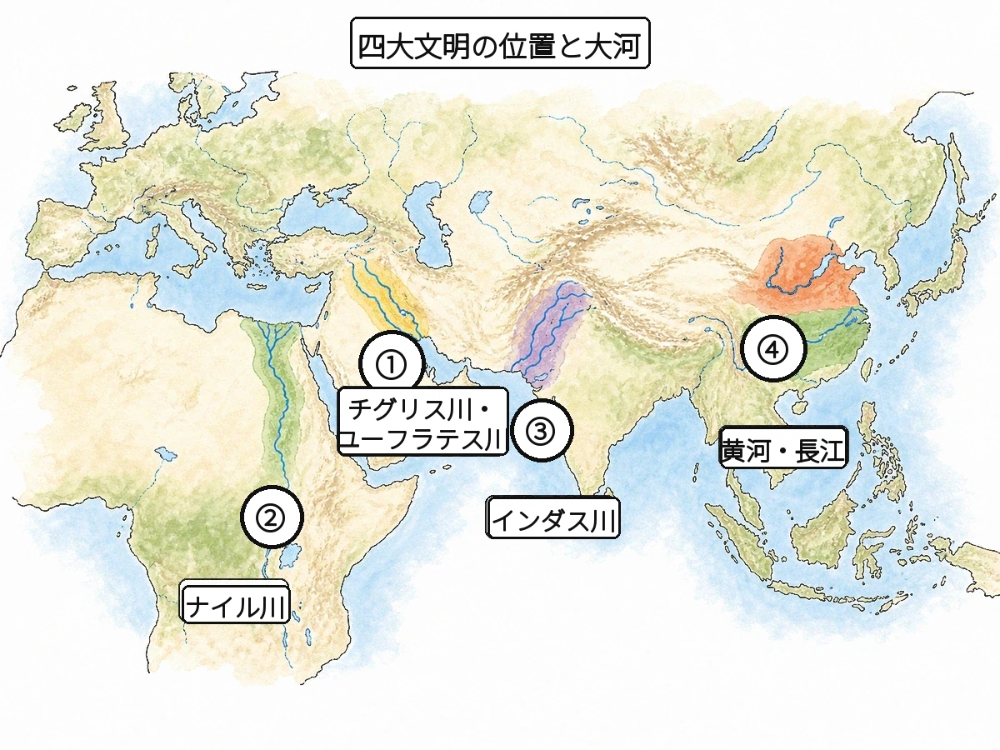

歴史 ② 問題集 Web版
古代の世界
古代文明 〜 三大宗教の成立
 いっしょに がんばろう！
いっしょに がんばろう！タブか下のリストから単元を選ぼう！
やり方（おすすめ順・穴埋め・一問一答・4択・記述）は単元を開いてから選べるよ。
やり方（おすすめ順・穴埋め・一問一答・4択・記述）は単元を開いてから選べるよ。
年
年表でチェック
（ ）をタップすると答えが出るよ。まずは自分で言ってから確かめよう！
| 年代 | できごと |
|---|---|
| 約700万年前 | アフリカで最古の人類であるが出現する |
| 約240万年前 | 火を使うようになったが現れる |
| 約20万年前 | 現在の人類の祖先であるが出現する |
| 約1万年前 | 農耕・牧畜が始まるに入る |
| 紀元前18世紀ごろ | バビロニアでが定められる |
| 紀元前16世紀頃 | 中国最古の王朝であるが成立する |
| 紀元前8〜3世紀 | 諸国が争うとなる |
| 紀元前6世紀 | が仁と礼の教えを説く |
| 紀元前5世紀頃 | インドでが仏教を開く |
| 紀元前5世紀 | ギリシャの連合軍がでペルシャを撃退する |
| 紀元前221年 | が中国を統一する |
| 紀元前202年 | 劉邦がを建国する |
| 1世紀 | パレスチナでが神の愛による救いを説く |
| 4世紀末 | ローマ帝国でが国教となる |
| 476年 | が滅亡する |
| 7世紀 | がイスラームを開く |
1
人類の出現と進化
▶やり方をえらぼう目次にもどれば何度でも変えられるよ
解答：
採点：
順番：
順番：
A要点まとめ（ ）をタップして確かめよう
📖 先に参考書で理解する
約700万年前、アフリカで直立二足歩行を始めた最古の人類であるが出現した。約200万年前には火を使うようになったが現れ、北京原人やジャワ原人がその代表である。約20万年前には現在の人類の直接の祖先である（ホモ・サピエンス）が出現した。打製石器を使い狩猟・採集で移動生活を送った時代をといい、フランスのやスペインのアルタミラでは見事な洞窟壁画が残された。約1万年前になると、みがいて仕上げたや土器が使われ始め、農耕・牧畜が始まるに入った。これにより人々は移動をやめて村をつくるを営むようになった。
B一問一答1 / 14
約700万年前にアフリカで現れた最古の人類は？
📖 解説を読む（ヒント）
猿人
約700万年前にアフリカ大陸で誕生した最初の人類。直立二足歩行が大きな特徴で、手が自由になり道具を扱えるようになった。
B一問一答3 / 14
約20万年前に現れた現在の人類の直接の祖先は？
📖 解説を読む（ヒント）
新人（ホモ・サピエンス）
現在の人類すべての祖先。「知恵のある人」という意味のラテン語名を持つ。洞窟絵画など精神文化も見られる。
B一問一答5 / 14
打製石器を使い狩猟・採集をしていた時代は？
📖 解説を読む（ヒント）
旧石器時代
まだ土器がなく、移動しながら狩猟・採集で暮らした時代。打製石器が特徴で、農耕はまだ本格的に始まっていない。
B一問一答7 / 14
磨製石器や土器を使い始め、農耕が始まった時代は？
📖 解説を読む（ヒント）
新石器時代
約1万年前に始まった、磨製石器や土器の使用、農耕・牧畜の開始が特徴の時代。定住生活や村の発達につながった。
B一問一答8 / 14
新石器時代に使われ始めた、食物の煮炊きや貯蔵に用いた容器は？
📖 解説を読む（ヒント）
土器
新石器時代に作られ始めた粘土を焼いた容器。食物の煮炊きや貯蔵が可能になり、人々の生活が大きく変わった。
B一問一答10 / 14
スペインで発見された旧石器時代の洞窟壁画は？
📖 解説を読む（ヒント）
アルタミラ
スペイン北部の洞窟で発見された旧石器時代の壁画。野牛などが描かれ、フランスのラスコーと並ぶ代表例。
B一問一答11 / 14
旧石器時代にあたる、寒冷な時期が繰り返された時代は？
📖 解説を読む（ヒント）
氷河時代
何度も繰り返された寒冷な時期。海面が低下し大陸と島が陸続きになり、人類の移動を可能にした。
B一問一答12 / 14
新石器時代に始まった新しい食料の生産方法は？
📖 解説を読む（ヒント）
農耕・牧畜
新石器時代に始まり、食料を安定して得られるようになった。「農業革命」とも呼ばれる。定住生活・村・身分差の発生につながる。
B一問一答13 / 14
農耕の開始によって可能になった、移動しない暮らし方は？
📖 解説を読む（ヒント）
定住生活
農耕・牧畜の開始で食料が安定したことで可能になった暮らし方。集落の形成や、やがて国家誕生につながった。
B一問一答14 / 14
骨や角で作った針や釣り針などの道具を何という？
📖 解説を読む（ヒント）
骨角器
動物の骨や角を加工して作った道具。釣り針や縫い針など、石器よりも繊細で細かな加工が可能だった。
B一問一答全14問・まとめて採点
まず全部の問題にこたえてから、下のボタンでまとめて答え合わせしよう！
(1)約700万年前にアフリカで現れた最古の人類は？
猿人
約700万年前にアフリカ大陸で誕生した最初の人類。直立二足歩行が大きな特徴で、手が自由になり道具を扱えるようになった。
(2)約240万年前に現れ火を使うようになった人類は？
原人
火を使い始めたことで食物の加熱や暖を取ることが可能になった。北京原人やジャワ原人が代表例。
(3)約20万年前に現れた現在の人類の直接の祖先は？
新人（ホモ・サピエンス）
現在の人類すべての祖先。「知恵のある人」という意味のラテン語名を持つ。洞窟絵画など精神文化も見られる。
(4)石を打ち欠いて作った石器は？
打製石器
石を打ち欠いて作る最も原始的な石器。旧石器時代の代表的な道具で、狩猟や採集のために使われた。
(5)打製石器を使い狩猟・採集をしていた時代は？
旧石器時代
まだ土器がなく、移動しながら狩猟・採集で暮らした時代。打製石器が特徴で、農耕はまだ本格的に始まっていない。
(6)表面をみがいて作った石器は？
磨製石器
表面を研磨して仕上げるため、打製石器より精巧で切れ味が良い。新石器時代に登場し、農耕と関係が深い。
(7)磨製石器や土器を使い始め、農耕が始まった時代は？
新石器時代
約1万年前に始まった、磨製石器や土器の使用、農耕・牧畜の開始が特徴の時代。定住生活や村の発達につながった。
(8)新石器時代に使われ始めた、食物の煮炊きや貯蔵に用いた容器は？
土器
新石器時代に作られ始めた粘土を焼いた容器。食物の煮炊きや貯蔵が可能になり、人々の生活が大きく変わった。
(9)フランスで発見された旧石器時代の洞窟壁画は？
ラスコー
フランス南西部の洞窟で発見。牛や馬などの動物が描かれ、狩りの成功を祈ったと考えられる。
(10)スペインで発見された旧石器時代の洞窟壁画は？
アルタミラ
スペイン北部の洞窟で発見された旧石器時代の壁画。野牛などが描かれ、フランスのラスコーと並ぶ代表例。
(11)旧石器時代にあたる、寒冷な時期が繰り返された時代は？
氷河時代
何度も繰り返された寒冷な時期。海面が低下し大陸と島が陸続きになり、人類の移動を可能にした。
(12)新石器時代に始まった新しい食料の生産方法は？
農耕・牧畜
新石器時代に始まり、食料を安定して得られるようになった。「農業革命」とも呼ばれる。定住生活・村・身分差の発生につながる。
(13)農耕の開始によって可能になった、移動しない暮らし方は？
定住生活
農耕・牧畜の開始で食料が安定したことで可能になった暮らし方。集落の形成や、やがて国家誕生につながった。
(14)骨や角で作った針や釣り針などの道具を何という？
骨角器
動物の骨や角を加工して作った道具。釣り針や縫い針など、石器よりも繊細で細かな加工が可能だった。

2
古代文明の誕生
▶やり方をえらぼう目次にもどれば何度でも変えられるよ
解答：
採点：
順番：
順番：
A要点まとめ（ ）をタップして確かめよう
📖 先に参考書で理解する
大河のほとりでは、都市や文字を持つ高度な社会である文明が発達した。チグリス・ユーフラテス川流域にはが起こり、粘土板に刻むや月の満ち欠けを基準にした太陰暦、時間や角度のもとになった60進法が生み出された。紀元前18世紀ごろ、バビロニアの王が定めたは「目には目を」の言葉で知られる。ナイル川流域に発達したでは、王であるの墓として巨大なが築かれ、絵のような（ヒエログリフ）も使われた。インダス川流域に栄えたでは、モヘンジョ＝ダロなど整然とした街路を持つ計画都市が造られたが、のちに侵入したによって身分制度のもとがつくられた。
B一問一答1 / 14
大河のほとりで発達した、都市や文字を持つ社会を何という？
📖 解説を読む（ヒント）
文明
大河のほとりで農耕が発展し、都市・文字・国家が生まれた高度な社会。メソポタミア・エジプト・インダス・中国が四大文明。
B一問一答2 / 14
チグリス・ユーフラテス川流域で発達したのは何文明？
📖 解説を読む（ヒント）
メソポタミア文明
「川の間の土地」という意味。チグリス・ユーフラテス川流域で発達し、くさび形文字・太陰暦・60進法が生まれた。
B一問一答3 / 14
メソポタミアで粘土板に刻まれたのは何文字？
📖 解説を読む（ヒント）
くさび形文字
葦のペンで粘土板に刻まれた文字。メソポタミア文明で生まれ、商業や行政の記録、法典の記述などに使われた。
B一問一答4 / 14
「目には目を」で知られるバビロニアの法律を何という？
📖 解説を読む（ヒント）
ハンムラビ法典
「目には目を、歯には歯を」で知られる、紀元前18世紀ごろにバビロニアのハンムラビ王が定めた古い法律。
B一問一答7 / 14
エジプトで死んだ王をまつる大きな石の建造物は？
📖 解説を読む（ヒント）
ピラミッド
エジプトの王ファラオの墓として建設された巨大な石造建造物。クフ王のピラミッドが最大で、エジプト文明の象徴。
B一問一答9 / 14
インダス川流域で栄えたのは何文明？
📖 解説を読む（ヒント）
インダス文明
インダス川流域で栄えた文明。モヘンジョ＝ダロやハラッパーなどの計画都市が特徴で、整然とした街路や排水設備を持っていた。
B一問一答11 / 14
メソポタミアで発明された、月の満ち欠けを基準にした暦は？
📖 解説を読む（ヒント）
太陰暦
月の満ち欠けを基準にした暦。メソポタミアで発明され、現在もイスラム暦などに使われている。
B一問一答12 / 14
メソポタミアで発明された、時間や角度のもとになった数え方は？
📖 解説を読む（ヒント）
60進法
メソポタミアで発明された数え方。1時間＝60分、1分＝60秒、円周＝360度など現在の時間・角度のもとになった。
B一問一答14 / 14
インダス文明の代表的な計画都市の遺跡は？
📖 解説を読む（ヒント）
モヘンジョ＝ダロ
インダス文明の代表的な計画都市遺跡。レンガ造りの整然とした街路と排水設備、公衆浴場などを備えていた。
B一問一答全14問・まとめて採点
まず全部の問題にこたえてから、下のボタンでまとめて答え合わせしよう！
(1)大河のほとりで発達した、都市や文字を持つ社会を何という？
文明
大河のほとりで農耕が発展し、都市・文字・国家が生まれた高度な社会。メソポタミア・エジプト・インダス・中国が四大文明。
(2)チグリス・ユーフラテス川流域で発達したのは何文明？
メソポタミア文明
「川の間の土地」という意味。チグリス・ユーフラテス川流域で発達し、くさび形文字・太陰暦・60進法が生まれた。
(3)メソポタミアで粘土板に刻まれたのは何文字？
くさび形文字
葦のペンで粘土板に刻まれた文字。メソポタミア文明で生まれ、商業や行政の記録、法典の記述などに使われた。
(4)「目には目を」で知られるバビロニアの法律を何という？
ハンムラビ法典
「目には目を、歯には歯を」で知られる、紀元前18世紀ごろにバビロニアのハンムラビ王が定めた古い法律。
(5)ナイル川流域で発達したのは何文明？
エジプト文明
ナイル川の洪水が肥沃な土を運び、豊かな農業を支えた。ピラミッド・太陽暦・象形文字が特徴。
(6)エジプトで作られた1年365日の暦は？
太陽暦
太陽の動きを基準にした1年365日の暦。エジプトでナイル川の洪水時期を正確に予測するために作られた。
(7)エジプトで死んだ王をまつる大きな石の建造物は？
ピラミッド
エジプトの王ファラオの墓として建設された巨大な石造建造物。クフ王のピラミッドが最大で、エジプト文明の象徴。
(8)エジプトで発明された絵のような文字は？
象形文字
ヒエログリフとも呼ばれ、絵のような形が特徴のエジプトの文字。神殿や墓に刻まれパピルスにも書かれた。
(9)インダス川流域で栄えたのは何文明？
インダス文明
インダス川流域で栄えた文明。モヘンジョ＝ダロやハラッパーなどの計画都市が特徴で、整然とした街路や排水設備を持っていた。
(10)衰退したインダス文明の地に侵入した民族は？
アーリヤ人
インダス文明衰退後にインドに侵入。のちのカースト制度につながる身分制度が生まれた。
(11)メソポタミアで発明された、月の満ち欠けを基準にした暦は？
太陰暦
月の満ち欠けを基準にした暦。メソポタミアで発明され、現在もイスラム暦などに使われている。
(12)メソポタミアで発明された、時間や角度のもとになった数え方は？
60進法
メソポタミアで発明された数え方。1時間＝60分、1分＝60秒、円周＝360度など現在の時間・角度のもとになった。
(13)エジプトで王のことを何と呼んだか？
ファラオ
「大きな家」という意味のエジプトの王の称号。神の化身とされ、巨大なピラミッドを墓として建設させた。
(14)インダス文明の代表的な計画都市の遺跡は？
モヘンジョ＝ダロ
インダス文明の代表的な計画都市遺跡。レンガ造りの整然とした街路と排水設備、公衆浴場などを備えていた。
E資料問題写真を見て答えよう

(1)地図中の①〜④は、古代に文明がおこった場所を示している。①のチグリス川・ユーフラテス川の流域におこった文明を何というか。
(2)地図中②のナイル川の流域におこった文明を何というか。
(3)地図中③のインダス川の流域におこった文明を何というか。
(4)地図中④の黄河・長江の流域におこった文明を何というか。
(5)この地図から読み取れる、古代の四大文明に共通する立地の特徴を、「大河」の語を使って説明しなさい。
3
中国文明の発展
▶やり方をえらぼう目次にもどれば何度でも変えられるよ
解答：
採点：
順番：
順番：
A要点まとめ（ ）をタップして確かめよう
📖 先に参考書で理解する
黄河や長江の流域でおこった中国文明では、殷で亀の甲羅や牛の骨に占いの結果を記すが使われ、のちの漢字のもとになった。殷を滅ぼした周の支配が弱まると、多くの国が争うとなり、思想家が活躍した。は「仁」と「礼」を説き、その教えは弟子がまとめたにしるされ、儒教のもとになった。紀元前221年、は中国を初めて統一して「皇帝」の称号を用い、文字や度量衡を統一し、北方民族の侵入を防ぐを築いた。しかし厳しい政治への反発から秦は短期間で滅び、劉邦が建てたでは儒教が国の学問となり、西方と結ぶ交易路であるを通じて絹などが運ばれた。
B一問一答1 / 14
黄河や長江の流域で発生した文明は？
📖 解説を読む（ヒント）
中国文明
黄河と長江の流域で発生した文明。紀元前16世紀頃の殷の甲骨文字から漢字へと発展し、東アジア全体に影響を与えた。
B一問一答4 / 14
紀元前6世紀に「仁」と「礼」を説いた人物は？
📖 解説を読む（ヒント）
孔子
紀元前6世紀頃の春秋時代に「仁」（思いやり）と「礼」（秩序）を説いた思想家。儒教の祖で、言行は論語にまとめられた。
B一問一答6 / 14
紀元前3世紀に初めて中国を統一した王は？
📖 解説を読む（ヒント）
始皇帝
紀元前221年に秦が中国を初統一した際の王。「皇帝」の称号を初めて用い、文字・度量衡の統一や万里の長城建設を行った。
B一問一答7 / 14
始皇帝が北方民族の侵入を防ぐために築いたのは？
📖 解説を読む（ヒント）
万里の長城
北方の遊牧民族の侵入を防ぐための巨大な防壁。始皇帝が各地の長城をつなぎ、明代に現在の姿に整備された。
B一問一答8 / 14
秦の次に中国を統一し大帝国となった国は？
📖 解説を読む（ヒント）
漢
紀元前202年に劉邦が秦の次に建国し約400年続いた大帝国。儒教を国の学問として採用し、シルクロードで西方と交易した。
B一問一答9 / 14
中国と西方を結んだ東西交易路の名称は？
📖 解説を読む（ヒント）
シルクロード
中国の絹が西方に運ばれたことが名前の由来。東西の文化・物資の交流路。仏教もこの道で中国に伝わった。
B一問一答10 / 14
始皇帝の墓のそばに埋められた兵士の焼き物は？
📖 解説を読む（ヒント）
兵馬俑
始皇帝の墓のそばに埋められた実物大の兵士や馬の焼き物。1974年に陝西省で発見され、数千体が出土した。
B一問一答11 / 14
孔子の教えをもとにした思想・学問は？
📖 解説を読む（ヒント）
儒教
孔子の教えをもとにした思想・学問。仁と礼を重んじ、漢の時代に国の学問となって東アジアに広く影響を与えた。
B一問一答12 / 14
周の支配が弱まった後、多くの国が争った時代は？
📖 解説を読む（ヒント）
春秋戦国時代
紀元前8〜3世紀の周の支配が弱まった後の時代。多くの国が争い、孔子や老子など諸子百家の思想家が活躍した。
B一問一答14 / 14
シルクロードを通じて中国から西方に運ばれた主な産物は？
📖 解説を読む（ヒント）
絹（シルク）
シルクロードの名前の由来となった中国の特産品。当時西方では作れない貴重品で、高値で取引された。
B一問一答全14問・まとめて採点
まず全部の問題にこたえてから、下のボタンでまとめて答え合わせしよう！
(1)黄河や長江の流域で発生した文明は？
中国文明
黄河と長江の流域で発生した文明。紀元前16世紀頃の殷の甲骨文字から漢字へと発展し、東アジア全体に影響を与えた。
(2)殷で占いの結果を記すのに使われた文字は？
甲骨文字
亀の甲羅や牛の骨に刻まれた中国最古の文字。殷で占いの記録に使われ、現在の漢字のもとになった。
(3)殷を滅ぼし、その後に支配が弱まった国は？
周
紀元前11世紀頃に殷を滅ぼした王朝。やがて支配力が弱まり、諸侯が争う春秋戦国時代に入った。
(4)紀元前6世紀に「仁」と「礼」を説いた人物は？
孔子
紀元前6世紀頃の春秋時代に「仁」（思いやり）と「礼」（秩序）を説いた思想家。儒教の祖で、言行は論語にまとめられた。
(5)孔子の言行を弟子がまとめた書物は？
論語
孔子の言行を弟子たちがまとめた書物。儒教の基本経典となり、東アジア各国の思想や教育に大きな影響を与えた。
(6)紀元前3世紀に初めて中国を統一した王は？
始皇帝
紀元前221年に秦が中国を初統一した際の王。「皇帝」の称号を初めて用い、文字・度量衡の統一や万里の長城建設を行った。
(7)始皇帝が北方民族の侵入を防ぐために築いたのは？
万里の長城
北方の遊牧民族の侵入を防ぐための巨大な防壁。始皇帝が各地の長城をつなぎ、明代に現在の姿に整備された。
(8)秦の次に中国を統一し大帝国となった国は？
漢
紀元前202年に劉邦が秦の次に建国し約400年続いた大帝国。儒教を国の学問として採用し、シルクロードで西方と交易した。
(9)中国と西方を結んだ東西交易路の名称は？
シルクロード
中国の絹が西方に運ばれたことが名前の由来。東西の文化・物資の交流路。仏教もこの道で中国に伝わった。
(10)始皇帝の墓のそばに埋められた兵士の焼き物は？
兵馬俑
始皇帝の墓のそばに埋められた実物大の兵士や馬の焼き物。1974年に陝西省で発見され、数千体が出土した。
(11)孔子の教えをもとにした思想・学問は？
儒教
孔子の教えをもとにした思想・学問。仁と礼を重んじ、漢の時代に国の学問となって東アジアに広く影響を与えた。
(12)周の支配が弱まった後、多くの国が争った時代は？
春秋戦国時代
紀元前8〜3世紀の周の支配が弱まった後の時代。多くの国が争い、孔子や老子など諸子百家の思想家が活躍した。
(13)始皇帝が書物を焼き儒学者を弾圧した政策は？
焚書坑儒
始皇帝が考えを1つにまとめるため、儒教などの書物を焼き、反対する学者を生き埋めにした政策。
(14)シルクロードを通じて中国から西方に運ばれた主な産物は？
絹（シルク）
シルクロードの名前の由来となった中国の特産品。当時西方では作れない貴重品で、高値で取引された。
4
ギリシャ・ローマの世界
▶やり方をえらぼう目次にもどれば何度でも変えられるよ
解答：
採点：
順番：
順番：
A要点まとめ（ ）をタップして確かめよう
📖 先に参考書で理解する
古代ギリシャでは、都市を中心に独立した政治を行うが数多く形成された。中でもアテネでは成年男性の市民が民会に直接参加するが行われ、紀元前5世紀にはポリスの連合軍がで西アジアの大国ペルシャを撃退した。紀元前4世紀にはが東方へ遠征し、ギリシャと東方の文化が融合したが生まれた。一方ローマでは、王を置かず市民の代表が話し合うがおよそ500年続いたのち、皇帝が支配するに移った。ローマ帝国は各地に水を運ぶ水道橋やおよそ5万人を収容する巨大な円形闘技場コロッセオを築き、市民の権利を定めたを整えた。395年に帝国は東西に分裂し、476年にはが滅亡した。
B一問一答1 / 14
ギリシャで形成された都市国家を何という？
📖 解説を読む（ヒント）
ポリス
古代ギリシャの都市国家。アテネやスパルタが代表的で、丘の上のアクロポリスを中心に形成された独立国家。
B一問一答2 / 14
都市を中心に独立した政治を行う小国家を何という？
📖 解説を読む（ヒント）
都市国家
都市を中心に独立した政治を行う小国家。古代ギリシャのポリスが代表例で、アテネやスパルタが知られる。
B一問一答3 / 14
アテネで行われた、市民全員が参加して行う政治を何という？
📖 解説を読む（ヒント）
民主政
アテネで成年男性市民が直接参加して政治を決めた。現代民主主義の原点。女性や奴隷は参加できなかった。
B一問一答4 / 14
東方へ遠征し、ギリシャ文化を広めたマケドニアの王は？
📖 解説を読む（ヒント）
アレクサンドロス大王
マケドニアの王で東方遠征を行い、ギリシャ文化とオリエント文化が融合したヘレニズム文化を生んだ。
B一問一答5 / 14
ギリシャ文化とオリエント文化が融合した文化は？
📖 解説を読む（ヒント）
ヘレニズム文化
紀元前4世紀のアレクサンドロス大王の東方遠征で、ギリシャとオリエントの文化が融合して生まれた文化。
B一問一答8 / 14
ローマで行われた、皇帝が支配する政治の仕組みを何という？
📖 解説を読む（ヒント）
帝政
紀元前1世紀末に共和政から移行した、皇帝が支配する政治の仕組み。地中海周辺の広大な領土を統治した。
B一問一答9 / 14
ローマ帝国が各地に建設した、水を運ぶ橋を何という？
📖 解説を読む（ヒント）
水道橋
ローマ帝国が各地に建設した、遠くの水源から都市に水を運ぶための橋。土木技術の高さを示す建造物。
B一問一答10 / 14
アテネの丘に建てられた、守護神をまつる神殿は？
📖 解説を読む（ヒント）
パルテノン神殿
紀元前5世紀にアテネのアクロポリスに建てられた、守護女神アテナを祀る神殿。ギリシャ建築の傑作。
B一問一答11 / 14
ギリシャのポリス連合軍が撃退した西アジアの大国はどこ？
📖 解説を読む（ヒント）
ペルシャ
ギリシャのポリス連合軍が紀元前5世紀のペルシャ戦争で撃退した西アジアの大国。アテネが中心となって戦った。
B一問一答13 / 14
民主政治が発達したギリシャのポリスは？
📖 解説を読む（ヒント）
アテネ
成年男性の市民が直接政治に参加した点が重要なギリシャ最大のポリス。直接民主政の発祥地で、パルテノン神殿でも有名。
B一問一答全14問・まとめて採点
まず全部の問題にこたえてから、下のボタンでまとめて答え合わせしよう！
(1)ギリシャで形成された都市国家を何という？
ポリス
古代ギリシャの都市国家。アテネやスパルタが代表的で、丘の上のアクロポリスを中心に形成された独立国家。
(2)都市を中心に独立した政治を行う小国家を何という？
都市国家
都市を中心に独立した政治を行う小国家。古代ギリシャのポリスが代表例で、アテネやスパルタが知られる。
(3)アテネで行われた、市民全員が参加して行う政治を何という？
民主政
アテネで成年男性市民が直接参加して政治を決めた。現代民主主義の原点。女性や奴隷は参加できなかった。
(4)東方へ遠征し、ギリシャ文化を広めたマケドニアの王は？
アレクサンドロス大王
マケドニアの王で東方遠征を行い、ギリシャ文化とオリエント文化が融合したヘレニズム文化を生んだ。
(5)ギリシャ文化とオリエント文化が融合した文化は？
ヘレニズム文化
紀元前4世紀のアレクサンドロス大王の東方遠征で、ギリシャとオリエントの文化が融合して生まれた文化。
(6)古代ローマで行われた、王がいない政治を何という？
共和政
王を置かず、貴族や市民の代表が話し合って政治を行うしくみ。古代ローマで約500年間続いた。
(7)ローマ市内に造られた巨大な円形闘技場は？
コロッセオ
約5万人を収容できた巨大な円形闘技場。ローマ帝国の象徴的建造物。ローマ文化の建築技術を示す。
(8)ローマで行われた、皇帝が支配する政治の仕組みを何という？
帝政
紀元前1世紀末に共和政から移行した、皇帝が支配する政治の仕組み。地中海周辺の広大な領土を統治した。
(9)ローマ帝国が各地に建設した、水を運ぶ橋を何という？
水道橋
ローマ帝国が各地に建設した、遠くの水源から都市に水を運ぶための橋。土木技術の高さを示す建造物。
(10)アテネの丘に建てられた、守護神をまつる神殿は？
パルテノン神殿
紀元前5世紀にアテネのアクロポリスに建てられた、守護女神アテナを祀る神殿。ギリシャ建築の傑作。
(11)ギリシャのポリス連合軍が撃退した西アジアの大国はどこ？
ペルシャ
ギリシャのポリス連合軍が紀元前5世紀のペルシャ戦争で撃退した西アジアの大国。アテネが中心となって戦った。
(12)ポリスの中心にある丘の上の城塞を何という？
アクロポリス
ポリスの中心にある丘の上の城塞。神殿が建てられた聖域でもあり、アテネのものが特に有名。
(13)民主政治が発達したギリシャのポリスは？
アテネ
成年男性の市民が直接政治に参加した点が重要なギリシャ最大のポリス。直接民主政の発祥地で、パルテノン神殿でも有名。
(14)地中海周辺を支配した古代の大帝国は？
ローマ帝国
紀元前後から数百年間、地中海周辺を支配した大帝国。道路・法律・キリスト教の広がりと関係が深い。
5
世界の三大宗教
▶やり方をえらぼう目次にもどれば何度でも変えられるよ
解答：
採点：
順番：
順番：
A要点まとめ（ ）をタップして確かめよう
📖 先に参考書で理解する
仏教・キリスト教・イスラームを合わせてという。紀元前5世紀頃、インドでが人々を苦しみから救う教えを説いて仏教を開いた。1世紀のパレスチナでは、が神の愛による救いを説き、その教えは弟子らによってとしてまとめられた。キリスト教は当初ローマ帝国から迫害されたが、4世紀末には国教となった。7世紀のアラビア半島ではが唯一神アッラーを信じるを開き、聖典である（コーラン）がまとめられた。信者はメッカにあるカーバ神殿の方角に向かって1日5回の礼拝を行う。なお、これらより古くから伝わるは唯一の神だけを信じる一神教の先駆けであり、は三つの宗教に共通する聖地となっている。
B一問一答1 / 14
仏教・キリスト教・イスラームを合わせて何という？
📖 解説を読む（ヒント）
三大宗教
世界で広く信者をもつ仏教・キリスト教・イスラームの3つの宗教。始めた人物・聖典・広がった地域を区別する。
B一問一答2 / 14
紀元前5世紀頃のインドで仏教を開いたのはだれ？
📖 解説を読む（ヒント）
シャカ
紀元前5世紀頃のインドで仏教を開いた人物。人々の苦しみから救う教えを説き、悟りを開いたとされる。
B一問一答3 / 14
パレスチナで神の愛による救いを説いたのはだれ？
📖 解説を読む（ヒント）
イエス
1世紀のパレスチナで神の愛による救いを説いたキリスト教の開祖。十字架にかけられたが復活したと信じられている。
B一問一答4 / 14
7世紀のアラビア半島でイスラームを開いたのはだれ？
📖 解説を読む（ヒント）
ムハンマド
7世紀にアラビア半島のメッカで生まれ、イスラームを創始した人物。唯一の神アッラーへの信仰を説いた。
B一問一答8 / 14
イスラームの聖典を何という？
📖 解説を読む（ヒント）
クルアーン（コーラン）
ムハンマドへのアッラーの啓示をまとめたイスラームの聖典。アラビア語で書かれ、信仰と生活全般の規範となる。
B一問一答9 / 14
ユダヤ教・キリスト教・イスラーム共通の聖地はどこ？
📖 解説を読む（ヒント）
エルサレム
ユダヤ教・キリスト教・イスラームの三宗教にとって重要な聖地。現在もパレスチナ問題の焦点の一つ。
B一問一答10 / 14
キリスト教を国教とした古代の大帝国は何帝国？
📖 解説を読む（ヒント）
ローマ帝国
地中海周辺を支配し、4世紀末にキリスト教を国教として採用した古代の大帝国。395年に東西に分裂した。
B一問一答11 / 14
メッカにあるイスラーム最高の聖地は何という神殿？
📖 解説を読む（ヒント）
カーバ神殿
アラビア半島のメッカにあるイスラーム最高の聖殿。世界中のムスリムは礼拝時にこの方角に向かう。
B一問一答12 / 14
インドで仏教を吸収して成立した多神教は何という宗教？
📖 解説を読む（ヒント）
ヒンドゥー教
古代インドのバラモン教が仏教を吸収して成立した多神教。カースト制度と結びつき、現在もインドの国民宗教。
B一問一答14 / 14
古代イスラエルの民が信仰した、一神教の先駆けとなった宗教は？
📖 解説を読む（ヒント）
ユダヤ教
古代イスラエルの民が信仰した一神教。一神教の先駆けで、のちのキリスト教やイスラームに大きな影響を与えた。
B一問一答全14問・まとめて採点
まず全部の問題にこたえてから、下のボタンでまとめて答え合わせしよう！
(1)仏教・キリスト教・イスラームを合わせて何という？
三大宗教
世界で広く信者をもつ仏教・キリスト教・イスラームの3つの宗教。始めた人物・聖典・広がった地域を区別する。
(2)紀元前5世紀頃のインドで仏教を開いたのはだれ？
シャカ
紀元前5世紀頃のインドで仏教を開いた人物。人々の苦しみから救う教えを説き、悟りを開いたとされる。
(3)パレスチナで神の愛による救いを説いたのはだれ？
イエス
1世紀のパレスチナで神の愛による救いを説いたキリスト教の開祖。十字架にかけられたが復活したと信じられている。
(4)7世紀のアラビア半島でイスラームを開いたのはだれ？
ムハンマド
7世紀にアラビア半島のメッカで生まれ、イスラームを創始した人物。唯一の神アッラーへの信仰を説いた。
(5)シャカの教えをもとにインドでおこった宗教は？
仏教
紀元前5世紀頃にシャカが開いた宗教。東アジアにも広がり、6世紀に日本にも伝わった。聖典は経典。
(6)イエスの教えをもとに広がった宗教は？
キリスト教
1世紀にイエスの教えをもとに広がった宗教。ローマ帝国で公認されのちに国教となった。聖典は聖書。
(7)ムハンマドが始めた一神教は？
イスラム教（イスラーム）
7世紀にムハンマドがアラビア半島で始めた一神教。聖典はコーラン（クルアーン）、聖地はメッカ。
(8)イスラームの聖典を何という？
クルアーン（コーラン）
ムハンマドへのアッラーの啓示をまとめたイスラームの聖典。アラビア語で書かれ、信仰と生活全般の規範となる。
(9)ユダヤ教・キリスト教・イスラーム共通の聖地はどこ？
エルサレム
ユダヤ教・キリスト教・イスラームの三宗教にとって重要な聖地。現在もパレスチナ問題の焦点の一つ。
(10)キリスト教を国教とした古代の大帝国は何帝国？
ローマ帝国
地中海周辺を支配し、4世紀末にキリスト教を国教として採用した古代の大帝国。395年に東西に分裂した。
(11)メッカにあるイスラーム最高の聖地は何という神殿？
カーバ神殿
アラビア半島のメッカにあるイスラーム最高の聖殿。世界中のムスリムは礼拝時にこの方角に向かう。
(12)インドで仏教を吸収して成立した多神教は何という宗教？
ヒンドゥー教
古代インドのバラモン教が仏教を吸収して成立した多神教。カースト制度と結びつき、現在もインドの国民宗教。
(13)キリスト教の聖典を何という？
聖書
旧約聖書と新約聖書からなるキリスト教の聖典。新約聖書にはイエスの言行と教えが記されている。
(14)古代イスラエルの民が信仰した、一神教の先駆けとなった宗教は？
ユダヤ教
古代イスラエルの民が信仰した一神教。一神教の先駆けで、のちのキリスト教やイスラームに大きな影響を与えた。
D記述問題3 / 3 文章で説明しよう
エルサレムが、ユダヤ教・キリスト教・イスラームにとって重要な都市とされているのはなぜか説明しなさい。
指定語句 イエス神殿
📖 解説を読む（ヒント）
エルサレムはイエスが処刑・復活した地であり、ユダヤ教の神殿があった場所で、ムハンマドが昇天したとされる地でもあり、キリスト教・ユダヤ教・イスラームの聖地が重なっているから。
解答
年表でチェック
猿人 原人 新人 新石器時代 ハンムラビ法典 殷 春秋戦国時代 孔子 シャカ ペルシャ戦争 始皇帝 漢 イエス キリスト教 西ローマ帝国 ムハンマド
1 人類の出現と進化
A 要点まとめ① 猿人 ② 原人 ③ 新人 ④ 旧石器時代 ⑤ ラスコー ⑥ 磨製石器 ⑦ 新石器時代 ⑧ 定住生活
B 一問一答(1) 猿人 (2) 原人 (3) 新人（ホモ・サピエンス） (4) 打製石器 (5) 旧石器時代 (6) 磨製石器 (7) 新石器時代 (8) 土器 (9) ラスコー (10) アルタミラ (11) 氷河時代 (12) 農耕・牧畜 (13) 定住生活 (14) 骨角器
C 実戦問題(1) エ（猿人→原人→新人） (2) ア（農耕ができた） (3) ウ（知恵のある人） (4) エ（動物） (5) エ（アルタミラ） (6) ア（煮炊きと食料の貯蔵） (7) ウ（国のもと） (8) イ（骨角器）
D 記述問題
(1) 猿人は直立二足歩行を始めたことで両手が自由になり、道具を作ったり使ったりできるようになったから。
(2) 旧石器時代は打製石器を使い狩猟・採集で移動生活をしたが、新石器時代には磨製石器や土器を使い、農耕・牧畜を始めて定住するようになった。
2 古代文明の誕生
A 要点まとめ① メソポタミア文明 ② くさび形文字 ③ ハンムラビ法典 ④ エジプト文明 ⑤ ファラオ ⑥ ピラミッド ⑦ 象形文字 ⑧ インダス文明 ⑨ アーリヤ人
B 一問一答(1) 文明 (2) メソポタミア文明 (3) くさび形文字 (4) ハンムラビ法典 (5) エジプト文明 (6) 太陽暦 (7) ピラミッド (8) 象形文字 (9) インダス文明 (10) アーリヤ人 (11) 太陰暦 (12) 60進法 (13) ファラオ (14) モヘンジョ＝ダロ
C 実戦問題(1) ウ（くさび形文字・太陰暦） (2) ア（ピラミッド・象形文字） (3) ウ（ヒエログリフ） (4) エ（時間や角度） (5) イ（粘土板） (6) ア（ファラオ） (7) イ（カースト制度） (8) ウ（議会政治が行われた）
D 記述問題
(1) 大河の流域は農耕に必要な豊富な水があり、定期的な洪水が運ぶ肥沃な土が農業を発展させたから。
(2) ナイル川の洪水がいつ起こるかを正確に予測し、農耕の準備や種まきの時期を知るためにつくられた。
(3) モヘンジョ＝ダロに代表されるように、整然とした街路をもつ計画都市が造られていた点に特徴がある。
E 資料問題(1) メソポタミア文明 (2) エジプト文明 (3) インダス文明 (4) 中国文明 (5) いずれも大きな川（大河）の流域でおこった。（例）
3 中国文明の発展
A 要点まとめ① 甲骨文字 ② 春秋戦国時代 ③ 孔子 ④ 論語 ⑤ 始皇帝 ⑥ 万里の長城 ⑦ 漢 ⑧ シルクロード
B 一問一答(1) 中国文明 (2) 甲骨文字 (3) 周 (4) 孔子 (5) 論語 (6) 始皇帝 (7) 万里の長城 (8) 漢 (9) シルクロード (10) 兵馬俑 (11) 儒教 (12) 春秋戦国時代 (13) 焚書坑儒 (14) 絹（シルク）
C 実戦問題(1) ア（人を思いやる心） (2) ア（春秋戦国時代） (3) ウ（兵馬俑） (4) ウ（中国の絹が西方に運ばれたから） (5) エ（文字と度量衡） (6) エ（厳しい政治に民が反乱を起こしたから） (7) イ（重要な政治を神に問うため） (8) イ（老子）
D 記述問題
(1) 始皇帝の厳しい法律や過酷な労役に人々が苦しみ、その死後各地で一斉に反乱が起こって秦は滅んだから。
(2) 北方民族が中国内部へ侵入してくるのを防ぐために、それまで各地にあった長城をつなぎ合わせて築いた。
(3) 孔子は「仁」と「礼」を説き、その教えは弟子がまとめた論語にしるされ、のちの儒教のもとになった。
4 ギリシャ・ローマの世界
A 要点まとめ① ポリス ② 直接民主政 ③ ペルシャ戦争 ④ アレクサンドロス大王 ⑤ ヘレニズム文化 ⑥ 共和政 ⑦ 帝政 ⑧ ローマ法 ⑨ 西ローマ帝国
B 一問一答(1) ポリス (2) 都市国家 (3) 民主政 (4) アレクサンドロス大王 (5) ヘレニズム文化 (6) 共和政 (7) コロッセオ (8) 帝政 (9) 水道橋 (10) パルテノン神殿 (11) ペルシャ (12) アクロポリス (13) アテネ (14) ローマ帝国
C 実戦問題(1) エ（476年） (2) ア（エジプトからインド北西部まで） (3) ウ（スパルタ） (4) ア（ギリシャ風） (5) イ（395年） (6) イ（市民が直接集会に参加して政治を決めたから） (7) イ（優れた道路網と法律を整備した） (8) エ（オリンピア）
D 記述問題
(1) アテネは成年男性の市民が直接民主政に参加したが、スパルタは軍事を重視し少数の支配者が治める政治を行った。
(2) 各地を結ぶ道路網を整備して人や軍隊の移動をしやすくし、市民の権利を定めたローマ法で統治の基盤を整えたから。
5 世界の三大宗教
A 要点まとめ① 三大宗教 ② シャカ ③ イエス ④ キリスト教 ⑤ ムハンマド ⑥ イスラーム ⑦ クルアーン ⑧ ユダヤ教 ⑨ エルサレム
B 一問一答(1) 三大宗教 (2) シャカ (3) イエス (4) ムハンマド (5) 仏教 (6) キリスト教 (7) イスラム教（イスラーム） (8) クルアーン（コーラン） (9) エルサレム (10) ローマ帝国 (11) カーバ神殿 (12) ヒンドゥー教 (13) 聖書 (14) ユダヤ教
C 実戦問題(1) ア（聖地はメッカで、聖典はコーランである） (2) ウ（仏教・キリスト教・イスラム教） (3) ア（シルクロード） (4) イ（5回） (5) ア（ムスリム） (6) イ（カースト制度） (7) イ（十字架にかけられた） (8) エ（救世主）
D 記述問題
(1) キリスト教は迫害されても信者が増え続け、その広がりを止められなくなったため、ローマ帝国が4世紀末に国教として公認したから。
(2) ムスリムはメッカにあるカーバ神殿の方角に向かって、毎日欠かさず1日5回の礼拝を行うことになっている。
(3) エルサレムはイエスが処刑・復活した地であり、ユダヤ教の神殿があった場所で、ムハンマドが昇天したとされる地でもあり、キリスト教・ユダヤ教・イスラームの聖地が重なっているから。